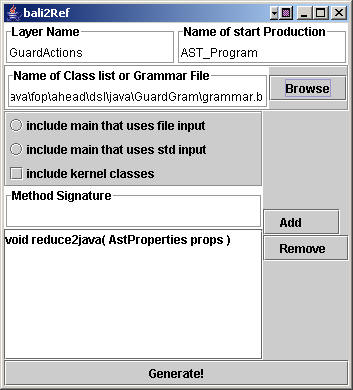

|
|
How to Extend the Java Language |
Languages can be modularly extended to support new features. The approach that AHEAD takes is to assemble preprocessors for extended-host-languages from layers. Such a preprocessor translates programs written in the extended-host-language into a program that is written in the host language. Although the techniques for building preprocessors from layers is similar to that of building extensible translators, there are differences.
In this chapter, we explain how we have customized the Java language in building AHEAD. The same approach can be used for building extensible preprocessors for other languages. We assume that people have read the section on "How to Build a Translator Using AHEAD Tools", as basic material about AHEAD is presented there which is relevant to our discussions here, but is not repeated.
Code for the examples in this section are found here .
Customizing Template.xml |
The first step in creating a language or language extension is to customize an Ant XML file for building the language. We provide two ant XML files, Template.xml and Configure.xml, both of which are used to generate another Ant XML file. Template.xml is a template of Ant XML file for building a language; Configure.xml takes Template.xml as input and generates a customized Ant XML file for a specific language. As an example, we will extend Java language with guard statement and name our language extension Guava in this example. In order for customizing an Ant XML file, run command :
c:/ahead > ant -f %fopdocs%/Configure.xml -Dproject.name="Guava"
where %fopdocs% is the path to the AHEAD documentation directory. The output of this command is an Ant XML file Guava.xml. We will use it to build our language extension.
Component Directory Creation |
The next step is to identify a model directory within ahead/dsl in which to place the grammar specification and semantic layer. If you are defining a language for the first time, you'll probably have to create a new model directory. If you are creating a language extension, then a model for the host language (i.e., the language to be extended) already exists. Once the model directory is known, create subdirectories for the new language specification and semantic actions.
Our example is to extend Java. Let's suppose we want to add an elementary Guard statement of the form:
expression -> statement
That is, if the expression is true, the statement is executed. The host language (Java) has already been created (in ahead/dsl/java/JavaGram). We need to create subdirectories for storing Guava grammar specifications and its semantic actions:
C:> cd ahead/dsl/java
C:/ahead/dsl/java > mkdir GuardGram
C:/ahead/dsl/java > mkdir GuardActions
Defining a Grammar Extension to a Host Language |
The Bali grammar extension for our Guard statement is shown below. This specification should be stored in a grammar.b file in directory ahead/dsl/java/GuardGram.
// grammar.b
"->" ARROW
require Expression; // import previously defined production
require Statement; // import previously defined production
Statement : LOOKAHEAD( Expression() "->" )
Expression ARROW Statement :: GuardCmd
;
We have added one
lexical token (ARROW) and one additional rule to the Statement production
(defined in ahead/dsl/java/JavaGram/grammar.b). (The LOOKAHEAD is needed to
disambiguate the Guard statement from an assignment statement). In general, one
can refer to any productions defined in the grammar of a host language or any of
its extensions. By doing so, this means that the extension being
defined requires the presence of the host language or another extensions in an
equation file for it to be used correctly. (These constraints are
specified as design rules). In our example, productions
Expression and Statement were defined in ahead/dsl/java/JavaGram/grammar.b.
Writing Equation Files |
The next step is to write an equation file. AHEAD synthesizes a program by evaluating an equation that composes the grammar and semantic layers of a language. Go to directory ahead/equations, and create a Guava.equation consisting of the following lines.
dsl/kernel dsl/java/JavaGram build/dsl/java/JavaGram dsl/java/Java dsl/java/GuardGram build/dsl/java/GuardGram dsl/java/GuardActions
dsl/kernel is a kernel layer, which is provided by AHEAD. It contains classes for building and traversing a parse tree. dsl/java/JavaGram and dsl/java/GuavaGram are grammar layers -- i.e. layers that have a single grammar.b file, where JavaGram defines the base grammar for Java and GuardGram is our grammar extension. The layers dsl/java/Java and dsl/java/GuardActions are semantic actions for these grammars. And finally, the layers build/dsl/java/JavaGram and build/dsl/java/GuardGram are applybali2jak (which is invoked by guava.xml).
Note: (1) GuardGram
follows JavaGram, since it extends JavaGram.
(2) GuardActions follows
Java, since it is a extension to Java.
(3) Java and
GuardGram can be swapped since neither of them is an extension of the other.
Also note an equivalent equation to the above factors all the grammar layers and semantic processing layers together. The reason is that the partial order of grammars and their semantic actions remains the same.
dsl/kernel dsl/java/JavaGram dsl/java/GuardGram build/dsl/java/JavaGram build/dsl/java/GuardGram dsl/java/Java dsl/java/GuardActions
Generating a Semantic Layer for Guard |
The Java layer has a Main class and other goodies that we can use. In particular, there already is defined a reduce2java method that we will use to define the semantic actions for guards. All we need to do is to write the GuardActions layer.
To do this, we first generate templates for the GuardAction classes. Run bali2layer, and point to the GuardGram/grammar.b file. We don't have to include a main (as the Java layer/feature already has a main that we can use). Further, we don't have to include extensions to the kernel classes because they already have a reduce2java method. But we do have to add a "void reduce2java( AstProperties props )" method to all GuardAction classes. We do so by adding its method signature to our bali2layer specification (see below).
c:/ahead/dsl/java/GuardActions > bali2layer

bali2layer will generate two template classes: GuardCmd.jak and Statement.jak.
The actions of Guard follow a standard AHEAD programming idiom: (1) obtain the AST arguments from the AST node (in our case, expression and statement),(2) get the PrintWriter object (to output our translation), and (3) output the translation. We add the following method to GuardCmd.jak:
public void reduce2java(AstProperties props) {
PrintWriter ps;
AstNode exp, stm;
// Step 1: get arguments of Guard node
// expression is argument #0
// statement is argument #1
// see grammar rule for Guard
exp = arg[0];
stm = arg[1];
// Step 2: obtain printwriter to output translation.
ps = (PrintWriter) props.getProperty("output");
// Step 3: translate Guard into if statement
ps.print("if (");
exp.reduce2java(props);
ps.print(") ");
stm.reduce2java(props);
}
Effectively what this is doing is a macro expansion. Whenever a Guard instance is encountered, the follow code is generate: "if ( <expression> ) <statement>". That is what the above accomplishes. We really don't need the Statement.jak class, as no changes to its current definition are needed. So simply delete Statement.jak.
This is not the only way to write the above code. We could have used AST constructors instead. Here is what to write:
public void reduce2java (AstProperties props) {
PrintWriter ps;
// Step 1: get arguments of Guard node
// expression is argument #0
// statement is argument #1
// see grammar rule for Guard
// note: (Statement) is not an (AST_Stmt), because (Statement) is a
// single statement, whereas AST_Stmt is a LIST of statements.
// an explicit conversion is needed here (Click here to see more of an explanation).
AST_Exp exp = (AST_Exp) arg[0];
AST_Stmt stm = ((Statement) arg[1]).toAST_Stmt();
// Step 2: create replacement parse tree
AST_Stmt s = stm{ if ( $exp(exp) ) {$stm(stm); }; }stm;
// Step 3: reduce to java the generated statement
s.reduce2java(props);
}
In the code that is supplied with these notes, solution #1 appears in the GuardActions layer, and solution#2 appears in the GuardActions2 layer. The guava.equation file we provide references solution #1.
Building a Preprocessor |
Now we're ready to debug our extension and build a preprocessor. To do so, we run ant:
c:/ahead > ant -f Guava.xml
Ant creates a Guava preprocessor in directory ahead/build, and build Guava.jar in directory ahead/build/Guava/lib. Add Guava.jar to your CLASSPATH.
Here's a simple guava program, myGuard.gua:
class myGuard { public static void main( String args[] ) { boolean t = true; t -> System.out.println( "its true" ); // test true Guard t = false; t -> System.out.println( "its false" ); // test false Guard } }
To run the preprocessor, type:
c:/ahead > guava myGuard.gua
What happens is that guava translates myGuard.gua to myGuard.java, which is shown below.
class myGuard {
public static void main( String args[] ) {
boolean t = true;if (
t) System.out.println( "its true" ); // test true Guard
t = false;if (
t) System.out.println( "its false" ); // test false Guard
}
}
Note that in doing our translation, the formatting of the output Java code isn't quite right. AHEAD lexical analyzers saves all white space before each token. Thus, when we print the expression, we see that a newline was part of the white space before the expression and this was echoed when we printed the expression (hence the newline immediately after the "if (" above). Use the reform tool to pretty-print generated Java files.
Copyright © Software Systems Generator Research Group.
All rights reserved.
Revised: 01/04/05.